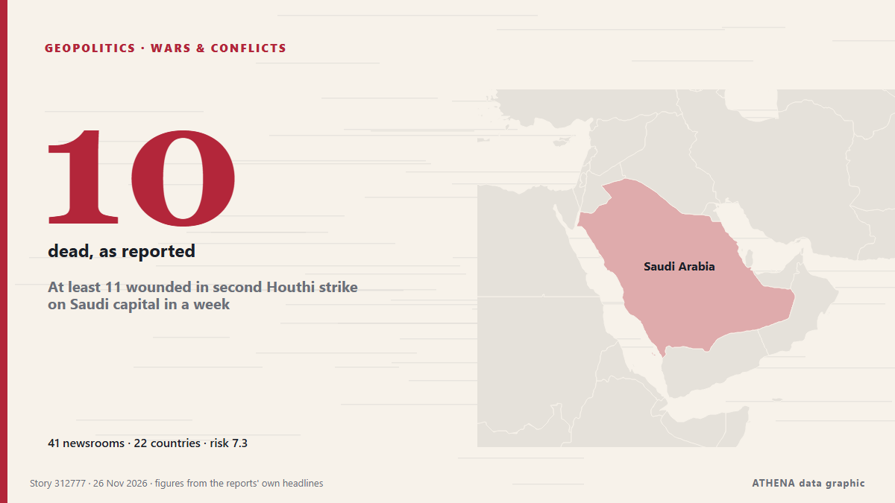

At least 11 wounded in second Houthi strike on Saudi capital in a week

Saudi Arabia's Civil Defense says Yemen's Houthis hit the tallest tower in Riyadh for the second time in less than a week. από Haaretz (English)
Τι άλλαξε 17 νέες αναφορές από 13 μέσα τις τελευταίες 24 ώρες.
Δείτε τις πηγές ›Τεκμήριωση: Επαρκής
Αναφέρθηκε ανεξάρτητα από 41 μέσα σε 22 χώρες από τις 27 Ιουλ, πρώτο το Sana'a Center for Strategic Studies· η κάλυψη εξασθενεί. Το ATHENA εκτιμά τον κίνδυνο υψηλό (7.3/10), κυρίως λόγω της σοβαρότητάς του και της εμβέλειάς του. Βεβαιότητα 89% (υψηλή): το επιβεβαιώνουν 41 ανεξάρτητα μέσα, μέση αξιοπιστία 76%. Μέσα ανά χώρα: Ιράν (6), Υεμένη (4), Ηνωμένες Πολιτείες (4). Κάλυψη: 27 Ιουλ έως 25 Νοε, 2899 ώρες.
Γιατί έχει σημασία: Η Ερυθρά Θάλασσα και τα στενά Μπαμπ ελ-Μαντέμπ είναι η συντομότερη θαλάσσια οδός Ασίας–Ευρώπης, μέσω της Διώρυγας του Σουέζ. Οι επιθέσεις σε εμπορικά πλοία αναγκάζουν τις εταιρείες να παρακάμπτουν την Αφρική, με κόστος χρόνου και χρημάτων για το παγκόσμιο εμπόριο και τη ναυτιλία.
Τι άλλαξε: 17 νέες αναφορές από 13 μέσα στο 24ωρο έως 26 Νοε.
Πρώτη διατύπωση: Air strikes target two districts in Yemen's Taiz, Houthi media says
ΑυτοματοποιημένοΕπιλέχθηκε, ομαδοποιήθηκε και βαθμολογήθηκε με τη δημοσιευμένη μέθοδο της ATHENA από 25 ανεξάρτητα μέσα. Ο τίτλος είναι του μέσου· οι προτάσεις της ATHENA ακολουθούν σταθερά πρότυπα - δεν τις γράφει παραγωγική ΤΝ. Πώς λειτουργεί →
Πώς να διαβάσετε αυτή τη σελίδα
- Τι διαβάζετε
- 41 μέσα σε 22 χώρες ανέφεραν αυτό το γεγονός. Οι αναφορές παρακάτω εμφανίζονται με τη σειρά που δημοσιεύτηκαν· κάθε τίτλος ανοίγει το αρχικό άρθρο. Το ATHENA δεν γράφει δικά του ρεπορτάζ.
- Η εκτίμησή μας
- Υπό παρακολούθηση — Οι αναφορές περιγράφουν ενέργεια ή απόφαση που δεν έχει ακόμη ληφθεί, ανάμεσα σε κράτη ή ένοπλες ομάδες. Το ATHENA παρακολουθεί τι θα συμβεί στη συνέχεια. Αναζητούμε τέσσερα είδη εξέλιξης: καμία περαιτέρω ενέργεια, μια ανοιχτή ενέργεια που κάποιος αναλαμβάνει, μια ενέργεια μέσω τρίτων ή χωρίς ανάληψη ευθύνης, και ένα ατύχημα ή μια παρεξήγηση. Δεν προβλέπουμε ποιο θα συμβεί.
- Πόσα στοιχεία υπάρχουν
- Επαρκής Αρκετά ανεξάρτητα μέσα συμφωνούν, αλλά η εικόνα μπορεί ακόμη να αλλάξει.
Αφού αφαιρεθούν οι επαναλήψεις, τα άσχετα και τα παλιά στοιχεία, υπολογίζονται 19 από τις 40 αναφορές που παρατίθενται· το 78% των τίτλων αντιστοιχεί στο γεγονός.
- Τι δεν σημαίνει
- Το ATHENA μετρά πώς καλύπτεται ένα γεγονός, όχι αν είναι αληθές. Δεν είναι πρόβλεψη, κρίση για το ποιος έχει δίκιο ή συμβουλή.
- Τι θα την άλλαζε
- Αναφορές από άλλα ανεξάρτητα μέσα που δείχνουν διαφορετική εξέλιξη, ή σαφής επιβεβαίωση ή διάψευση από επίσημη πηγή.
Εκτίμηση R2 · ανανεώνεται με κάθε ενημέρωση της σελίδας. Το ATHENA δεν έχει δημοσιεύσει ακόμη ιστορικό επιδόσεων για αυτές τις εκτιμήσεις· όταν το κάνει, θα συνδέεται εδώ.
Με μια ματιά
Επιλέγεται, βαθμολογείται και γράφεται από τη δημοσιευμένη μεθοδολογία του ATHENA. Κανένας συντάκτης δεν παρεμβαίνει σε μεμονωμένα γεγονότα. Πώς παράγεται ›
| 27 Jul 14:34 UTC | 1 |
|---|---|
| 29 Jul 14:34 UTC | 0 |
| 31 Jul 14:34 UTC | 0 |
| 02 Aug 14:34 UTC | 0 |
| 04 Aug 14:34 UTC | 0 |
| 06 Aug 14:34 UTC | 0 |
| 08 Aug 14:34 UTC | 0 |
| 10 Aug 14:34 UTC | 0 |
| 12 Aug 14:34 UTC | 0 |
| 14 Aug 14:34 UTC | 0 |
| 16 Aug 14:34 UTC | 0 |
| 18 Aug 14:34 UTC | 0 |
| 20 Aug 14:34 UTC | 0 |
| 22 Aug 14:34 UTC | 0 |
| 24 Aug 14:34 UTC | 0 |
| 26 Aug 14:34 UTC | 0 |
| 28 Aug 14:34 UTC | 0 |
| 30 Aug 14:34 UTC | 0 |
| 01 Sep 14:34 UTC | 0 |
| 03 Sep 14:34 UTC | 0 |
| 05 Sep 14:34 UTC | 0 |
| 07 Sep 14:34 UTC | 0 |
| 09 Sep 14:34 UTC | 0 |
| 11 Sep 14:34 UTC | 0 |
| 13 Sep 14:34 UTC | 0 |
| 15 Sep 14:34 UTC | 0 |
| 17 Sep 14:34 UTC | 0 |
| 19 Sep 14:34 UTC | 0 |
| 21 Sep 14:34 UTC | 0 |
| 23 Sep 14:34 UTC | 0 |
| 25 Sep 14:34 UTC | 0 |
| 27 Sep 14:34 UTC | 0 |
| 29 Sep 14:34 UTC | 0 |
| 01 Oct 14:34 UTC | 1 |
| 03 Oct 14:34 UTC | 0 |
| 05 Oct 14:34 UTC | 0 |
| 07 Oct 14:34 UTC | 0 |
| 09 Oct 14:34 UTC | 0 |
| 11 Oct 14:34 UTC | 0 |
| 13 Oct 14:34 UTC | 1 |
| 15 Oct 14:34 UTC | 0 |
| 17 Oct 14:34 UTC | 0 |
| 19 Oct 14:34 UTC | 0 |
| 21 Oct 14:34 UTC | 0 |
| 23 Oct 14:34 UTC | 2 |
| 25 Oct 14:34 UTC | 0 |
| 27 Oct 14:34 UTC | 0 |
| 29 Oct 14:34 UTC | 0 |
| 31 Oct 14:34 UTC | 0 |
| 02 Nov 14:34 UTC | 2 |
| 04 Nov 14:34 UTC | 2 |
| 06 Nov 14:34 UTC | 0 |
| 08 Nov 14:34 UTC | 1 |
| 10 Nov 14:34 UTC | 1 |
| 12 Nov 14:34 UTC | 0 |
| 14 Nov 14:34 UTC | 0 |
| 16 Nov 14:34 UTC | 0 |
| 18 Nov 14:34 UTC | 0 |
| 20 Nov 14:34 UTC | 3 |
| 22 Nov 14:34 UTC | 12 |
| 24 Nov 14:34 UTC | 47 |
| 25 Nov 12:26 UTC | 5.8 |
|---|---|
| 25 Nov 15:06 UTC | 6.5 |
| 25 Nov 17:12 UTC | 7.0 |
| 26 Nov 01:41 UTC | 7.7 |
| 26 Nov 13:25 UTC | 7.3 |
Γιατί αυτοί οι αριθμοί
Σημασία
Πόσο πολύ και πόσο εμφανώς αναφέρεται η είδηση.
Κίνδυνος
Τι περιγράφουν οι αναφορές, βαθμολογημένο για πιθανή ζημιά. Δεν είναι πρόβλεψη.
Βεβαιότητα
Πόσο καλά την στηρίζουν οι ανεξάρτητες πηγές.
Η κάλυψη — ποιος το ανέφερε και πότε
ο τίτλος όπως δημοσιεύτηκε · ανοίγει το πρωτότυπο- Sana'a Center for Strategic Studies · ΥεμένηThe Houthis are Setting a Dangerous Precedent
- Sana'a Center for Strategic Studies · ΥεμένηThe Battle for Taiz and the Struggle for Yemen
- Sana'a Center for Strategic Studies · ΥεμένηHow Have the Houthis Become So Dangerous?
- Amwaj.media · ΙράνShould Syria join Saudi Arabia’s Yemen campaign?
- Amwaj.media · ΙράνEgypt pledges support to Saudi Arabia as parliament weighs troop deployment
- IranWire · ΙράνChinese Special Envoy to Visit Iran, Saudi Arabia, and Oman
- ASPI The Strategist · ΑυστραλίαA quick look at the cheap ways to shoot down strike drones
- Sana'a Center for Strategic Studies · ΥεμένηHow the Houthis’ Image Took Shape and What It Obscured
- Amwaj.media · ΙράνCan Zaidi keep Iraq from becoming Riyadh's battlefield?
- Amwaj.media · ΙράνWould a Turkish base in Saudi Arabia be more symbol than shield?
- Middle East Eye · INTAir strikes target two districts in Yemen's Taiz, Houthi media says
- Free Malaysia Today · ΜαλαισίαSaudi-led coalition says it intercepted Houthi missile in western region
- AzerNews · ΑζερμπαϊτζάνSaudi coalition downs drone targeting Riyadh
- Anadolu Agency (English) · ΤουρκίαSaudi-led coalition intercepts Houthi drone targeting southern Saudi Arabia
- Gulf News · Ηνωμένα Αραβικά ΕμιράταSaudi-led coalition intercept Houthi missile in western region
- Arab News · Σαουδική ΑραβίαHouthi attacks on economic facilities and Saudi Arabia’s options
- Middle East Eye · INTSaudi attack on Yemen's Hodeidah kills four, wounds 18 others
- Responsible Statecraft · Ηνωμένες ΠολιτείεςWhy the Houthis are always winning
- Shafaq News (English) · ΙράκSaudi attack kills 10 in Hodeidah, Houthis say
- IranWire · ΙράνOil prices slip as Hormuz transit slows and Houthi attacks widen
- The New Arab · INTHouthis target schools and prisons to recruit more fighters
- Anadolu Agency (English) · Τουρκία2 civilians killed, 8 injured in Houthi attacks in Yemen's Taiz: Army
- Middle East Eye · INTHouthi-run government says Saudi air strikes killed civilians in Lahj
- Arab News · Σαουδική ΑραβίαSaudi investment minister, Chinese envoy discuss boosting cooperation
- The New Arab · INT11 injured as Houthis strike Riyadh for second time in a week
- The Straits Times · ΣιγκαπούρηSaudi skyscraper hit again, coalition slams ‘terrorist attack’
- IOL · Νότια ΑφρικήWestern Cape coalition councils take shape after inaugural meetings
- ABC News (International) · Ηνωμένες ΠολιτείεςHouthi rebels close in on Aden as Yemeni forces dig in behind a fortified line
- Middle East Eye · INTHouthi media report air strikes near Sanaa airport
- Anadolu Agency (English) · ΤουρκίαYemeni army reports 697 strikes on Houthi positions, says 97 fighters 'neutralized'
- investingLive (ForexLive) · INTSaudi Arabia triples its oil storage in Japan as Tokyo buys 8m barrels to refill reserves
- Express Tribune · ΠακιστάνHouthi projectile hits Saudi Arabia's Jazan port, causes minor damage: coalition
- CNBC World · Ηνωμένες ΠολιτείεςHouthi attack on Saudi Arabian sovereign wealth fund PIF's tower injures 11
- Middle East Eye · INTSaudi-led coalition says it downed four drones over kingdom's Eastern Province
- Khaama Press · ΑφγανιστάνSaudi-led Coalition Says It Struck Houthi Facilities at Yemen’s Hodeidah Port
- The Maritime Executive · Ηνωμένες ΠολιτείεςRiyadh, Hodeidah and Ras Tanura Hit in Saudi-Houthi Exchange of Fire
- Indian Express · ΙνδίαIndia condemns Houthi attack on Riyadh tower that injured two Indians
- AGBI · Ηνωμένα Αραβικά ΕμιράταUS advises vigilance after Houthis escalate attacks
- CGTN (World) · ΚίναAirstrikes rock Yemen's capital after Houthi drone attack in Riyadh
- Haaretz (English) · ΙσραήλAt least 11 wounded in second Houthi strike on Saudi capital in a week